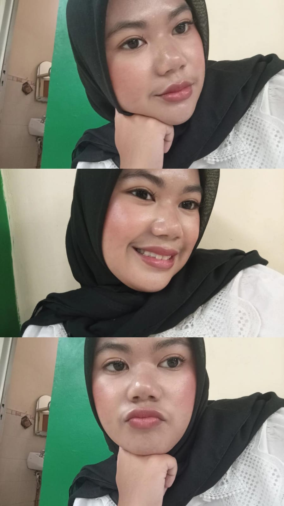

Farah Diva Mumtazah
Halo, Selamat Datang! ♡
Halo! Selamat datang di halaman kecilku. Namaku adalah Farah Diva Mumtazah, dan aku sedang dalam perjalanan seru mengejar impianku.
Sekarang, aku adalah seorang mahasiswi di jurusan Informatika, UIN Sunan Gunung Djati Bandung.
Biodata & Tentang Saya
Sedikit informasi tentang diriku ✨
Biodata
Farah Diva Mumtazah
1247050131
Informatika
UIN Sunan Gunung Djati Bandung
Tentang Saya ♡
Halo! Aku Farah Diva Mumtazah, biasa dipanggil Diva. Aku merupakan mahasiswi Informatika di UIN Sunan Gunung Djati Bandung yang hobi mencoba hal baru dan senang mengeksplorasi dunia.
Aku memiliki ketertarikan besar pada dunia data dan bisnis. Saat ini aku sedang aktif merintis langkah sebagai seorang pebisnis muda.
Tujuanku ke depan adalah berkarier sebagai Data Analyst yang handal, sekaligus membangun bisnis yang sukses.
Mata Kuliah Semester Ini
Daftar mata kuliah yang sedang aku pelajari ✨
| No | Kode & Mata Kuliah | Kelas | SKS | Semester | Ruang | Jadwal | Dosen |
|---|---|---|---|---|---|---|---|
| 1 | 20100470501024 - Manajemen Basis Data | B | 3 | 5 | R.4.09 |
Senin 07:00-09:30 |
Wildan Budiawan Zulfikar S.T., M.Kom. |
| 2 | 20100470501026 - Jaringan Komputer | B | 3 | 5 | R.4.10 |
Kamis 07:00-09:30 |
Cecep Nurul Alam M.T. |
| 3 | 20100470501030 - Pengembangan Aplikasi Web | B | 3 | 5 | Gedung R.3.9 |
Jumat 09:30-12:00 |
Muhammad Deden Firdaus ST, M.Kom. |
| 4 | 20100470501032 - Interaksi Manusia dan Komputer | B | 3 | 5 | R.4.01 |
Rabu 09:30-12:00 |
Dr. Cepy Slamet S.T., M.Kom. |
| 5 | 20100470501034 - Manajemen Proyek Perangkat Lunak | B | 3 | 5 | R.4.01 |
Senin 09:30-12:00 |
Agung Wahana S.E., M.T. |
| 6 | 20100470501028 - Pengembangan Aplikasi Mobile | B | 3 | 5 | R.4.12 |
Kamis 12:40-15:10 |
H. Aldy Rialdy Atmadja M.T. |
| 7 | 20100470503005 - ICT dan Islam | A | 2 | 7 | R.4.11 |
Selasa 12:40-14:20 |
Eva Nurlatifah M.Sc. |
| 8 | Intelegensia Buatan | A | 3 | 7 | R.4.10 |
Selasa 15:30-18:00 |
Jumadi ST., M.Cs. |
| Total SKS | 23 | Total Mata Kuliah: 8 | |||||
Let's Connect! 💜
Untuk ingin mengenal jauh atau melihat project selama kuliah boleh menghubungi aku melalui email dan GitHub yaaa.